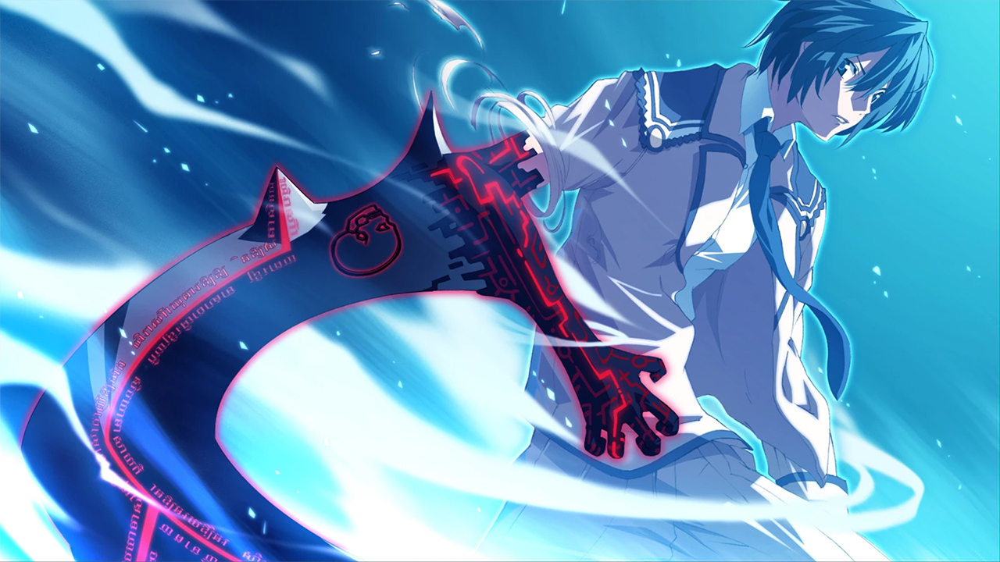
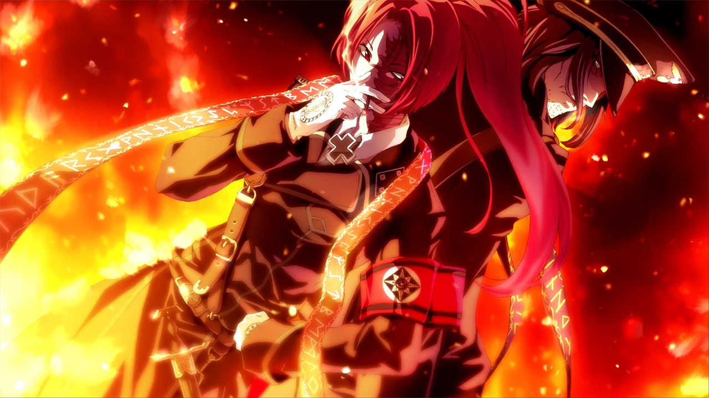
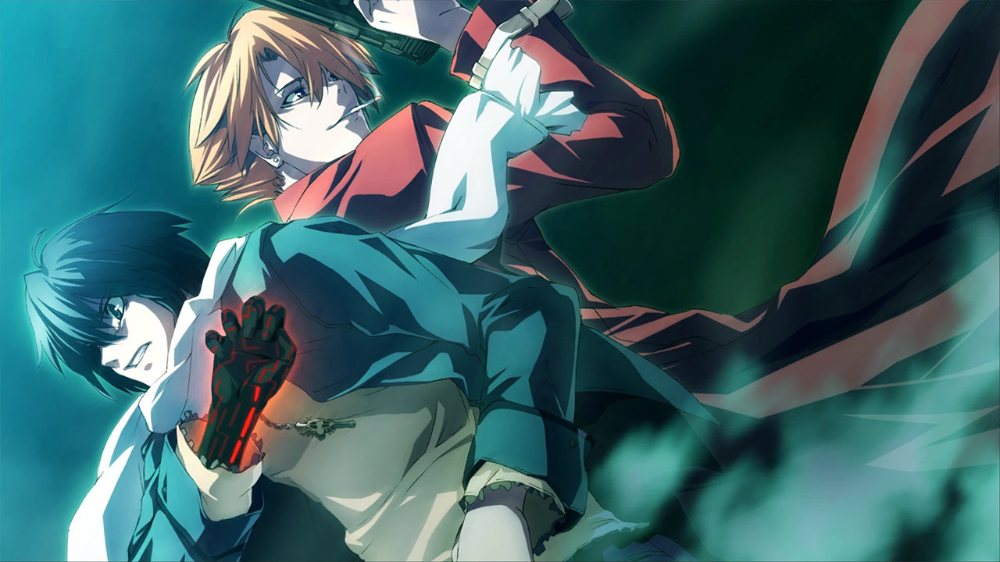
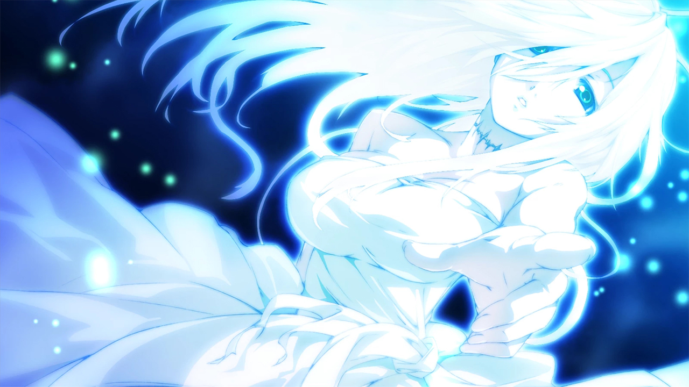
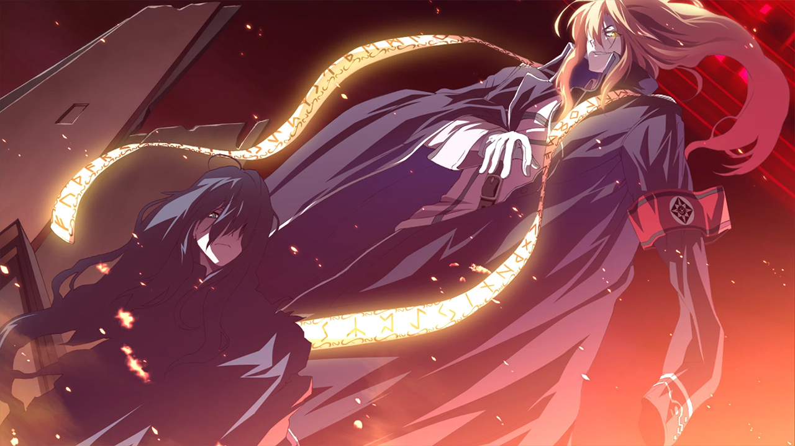

Dies irae
Release Date:
June 2, 2017
Developer:
Publisher
Genres:
Action, Drama, Mystery
Novel Length:
Anime Adaptation:
None
Prequel:
None
Sequel:
None

Reviews
"...I do believe Dies irae is a VN classic that every reader of Japanese visual novels ought to at least give a chance, once they're ready for the fairly meaty reading experience it provides."
"Chuuni world perspectives and plot development either make me cringe (like Chihaya's route in Rewrite) or fire me up and get me to bend my suspension of disbelief, but Dies Irae is the game that made me dump said suspension of disbelief along with whatever dislikes of shounen manga cliches out the window, allowing me to fully immerse myself in the ridiculous powerlevels and fight scenes without thinking of the restrictions of pre-established real life logic and the points of views of ordinary, mature, functional members of modern society."
"The quintessential chuuni experience that pretty much introduced that term into visual novel world. If you're into the genre and haven't gotten this game yet then... what are you doing?"
About This Novel
May 1, 1945 - Germany. On the eve of Berlin's collapse, a group of men and women carried out a certain ritual. To them, suffering defeat in the war meant nothing. If anything, the countless lives lost in the battle served as a catalyst to their sacrificial ceremony. Whether or not their attempt bore fruit - not a soul knows. Following the war, they faded from sight, mind, and eventually into the realm of myth.
61 years later - Japan, 2006.
Ren Fujii, a young man attending high school in Suwahara City, finds his friendship with his old buddy Shirou Yusa shatter to pieces following a certain incident, ending in a vicious fight that sees Ren hospitalized for two months.
The season shifts from autumn to winter - to the dawning weeks of December, with Christmas on the horizon. Having lost his best friend, Ren leaves the hospital with the intention to rebuild his new life without Shirou.
But even that plan soon falls apart. Irrationality that defies the realm of common sense begins to assault and devour the city. Abnormalities soon seek to destroy everything Ren holds dear before his eyes with overwhelming violence.
He must change, even if it means crossing the boundary between the ordinary and the extraordinary. His desires are hardly anything grand. All he wants is to return to those days of old. Back to those days filled with simple, everyday joy.
The battle with the Longinus Dreizehn Orden. A continuation of that war full of madness, carnage, and maledictions. What future awaits Ren at the end of his road...?
(From VNDB)
Technical Details
Platforms:
Windows
Resolution:
16:9
English:
Fully Translated
Animated Scenes:
Simple
Voiced:
Fully
You Might Also Like

Get It Now

Recommended
Get It